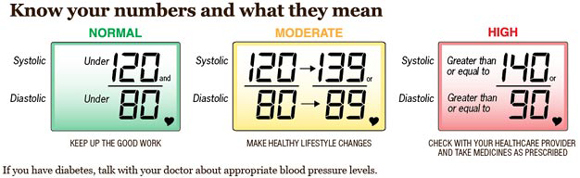
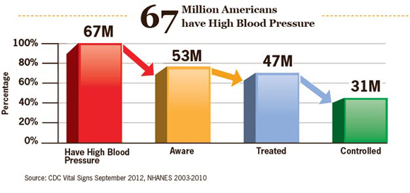
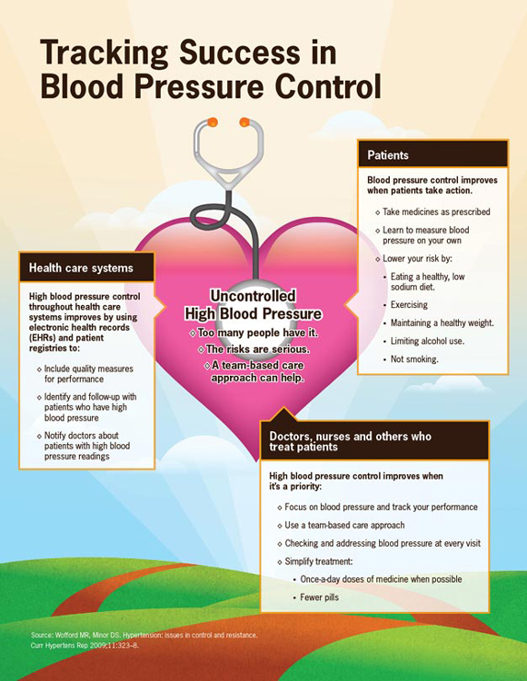

Getting Blood Pressure Under Control
Many missed opportunities to prevent heart disease and stroke
 ShareCompartir
ShareCompartir
On this Page
September 2012


1 in 3
Nearly 1 in 3 adults (about 67 million) have high blood pressure.
36M
About 36 million adults with high blood pressure don’t have it under control.
1,000
High blood pressure contributes to nearly 1,000 deaths a day.
High blood pressure is a major risk factor for heart disease and stroke, both of which are leading causes of death in the US. Nearly one-third of all American adults have high blood pressure and more than half of them don’t have it under control.* Many with uncontrolled high blood pressure don’t know they have it. Millions are taking blood pressure medicines, but their blood pressure is still not under control. There are many missed opportunities for people with high blood pressure to gain control. Doctors, nurses and others in health care systems should identify and treat high blood pressure at every visit.
*Blood pressure control means having a systolic blood pressure less than 140 mmHg and a diastolic blood pressure less than 90 mmHg, among people with high blood pressure.
Problem
Controlling blood pressure has to be a priority.
Why is blood pressure control so important to health?
When your blood pressure is high:
- You are 4 times more likely to die from a stroke
- You are 3 times more likely to die from heart disease
Even blood pressure that is slightly high can put you at greater risk.
Most people with uncontrolled high blood pressure:
- Know they have high blood pressure
- See their doctor
- Take prescribed medicine
Each of these is important, but there is much more to do. What’s needed now is for doctors, nurses and their patients to pay regular and frequent attention to controlling blood pressure.



Top of PageWhat Can Be Done
Federal government is
- Joining with the private sector in leading the national Million Hearts™ initiative to prevent a million heart attacks and strokes by 2017.
- Working with pharmacists on activities to provide education and counseling to patients with high blood pressure.
- Focusing on the importance of high blood pressure as a Leading Health Indicator.
- Measuring progress against the specific objectives in Healthy People 2020.
Health care systems where patients are seen and treated can
- Start having doctors, nurses, and others review patient records, looking for patients who need more attention to control their high blood pressure.
- Create system-wide targets using Healthy People 2020 objectives to achieve blood pressure control.
- Update staff monthly on progress and give feedback on success measures.
- Make it easier for patients to stay on medicines:
- Consider 90-day refills for prescriptions
- Consider no or lower co-payments for medicines
Doctors, nurses and others who treat patients can
- Flag and monitor patients with high blood pressure or who are at-risk. Report progress on patients using National Quality Forum (NQF) 0018.
- Counsel patients to take their medicines and make lifestyle changes. Follow their progress.
- Regularly evaluate the blood pressure medicines they take to determine whether these need to be changed.
- Address every blood pressure reading that is high by talking with the patient about taking prescribed medicines, adjusting current medicines and/or encouraging lifestyle changes. Consider once-a-day doses of medicines when possible.
Everyone can
- Take prescribed medicines each day and follow the directions on the bottle. If your blood pressure is still not under control or if you have side effects, talk with your doctor, nurse, or pharmacist about possibly changing your medicine.
- Work to maintain a healthy weight and meet the Physical Activity Guidelines for Americans.
- Follow a heart healthy eating plan with foods lower in sodium.
- Get help to stop smoking. If you don’t smoke, don’t start.
- Measure and write down your blood pressure readings between doctor’s visits. This can be done at home, at a grocery store or at the pharmacy.
- Keep your doctor, nurse, pharmacist or other health care provider informed of your blood pressure readings that you take at home.
Science Behind the Issue
Related Pages
- Vital Signs Issue details: Awareness and Treatment of Uncontrolled Hypertension Among Adults — United States, 2003–2010 Mortality Weekly Report (MMWR)
- CDC Feature- Getting Blood Pressure Under Control
- Teaming Up Against High Blood Pressure [PODCAST - 1:15 minutes]
- Teaming Up Against High Blood Pressure [PSA - 0:60 seconds]
- CDC VitalSigns: Getting Blood Pressure Under Control [VIDEO - 01:57 minutes]
- Winnable Battles
On Other Web Sites
- The Community Guide: Cardiovascular Disease Prevention and Control
- MedlinePlus - Heart Diseases
- MedlinePlus - High Blood Pressure
- Million Hearts
- Salt Matters: Preserving Choice, Protecting Health [VIDEO - 2:11 minutes]
- Page last reviewed: September 4, 2012
- Page last updated: September 4, 2012
- Content source:
- National Center for Chronic Disease Prevention and Health Promotion, Division of Nutrition, Physical Activity, and Obesity
- Page maintained by: Office of the Associate Director for Communications (OADC)